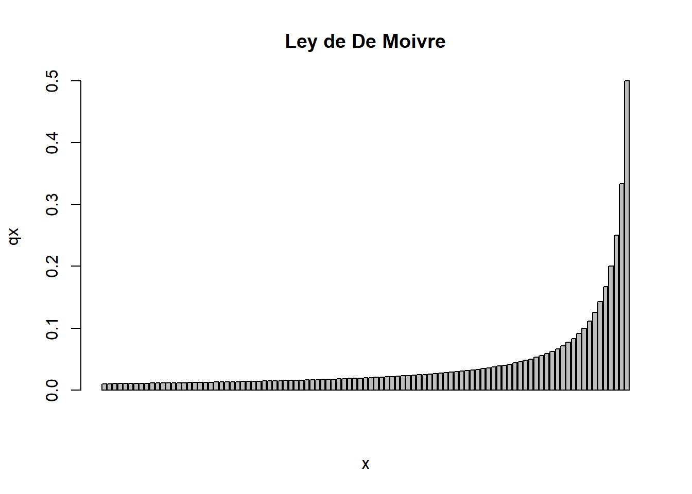
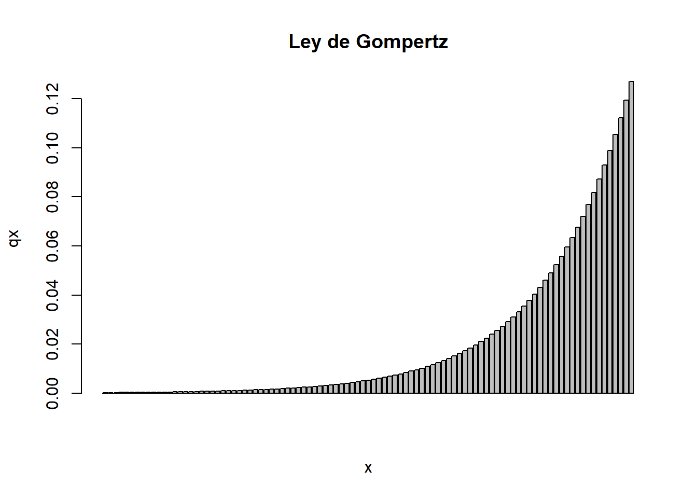
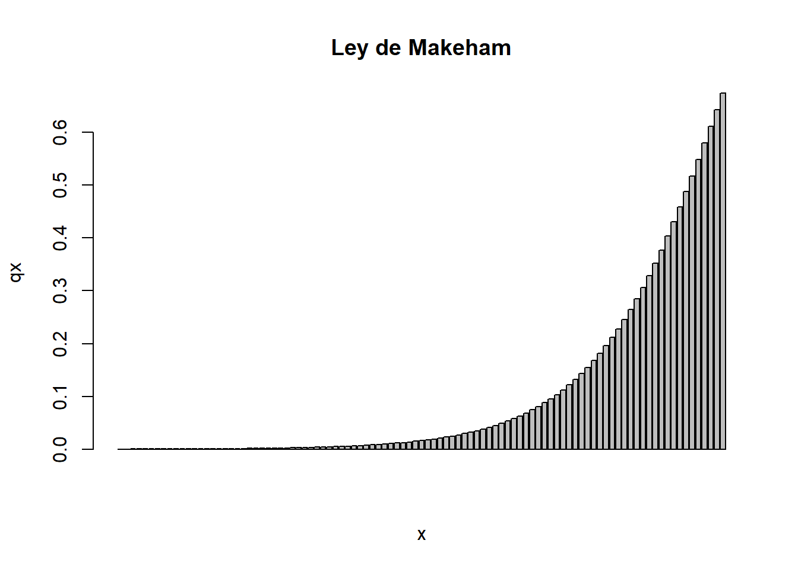
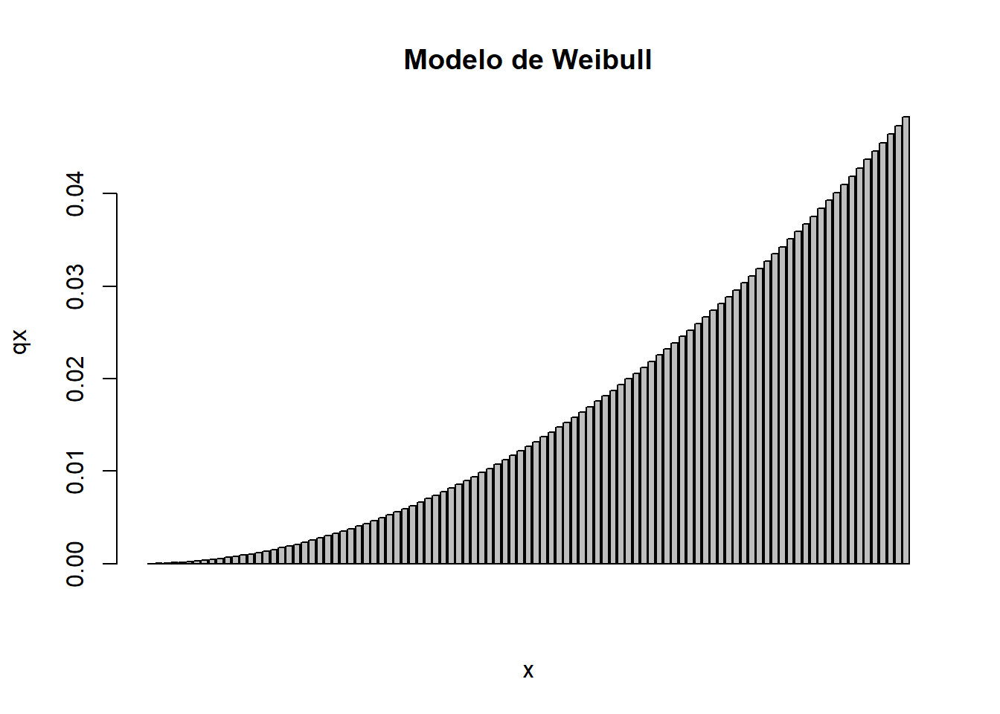
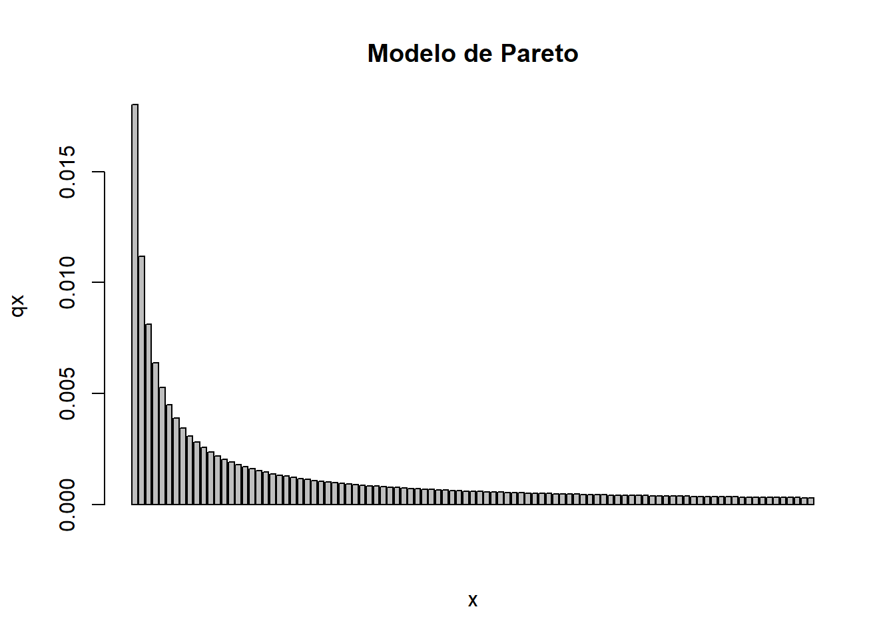
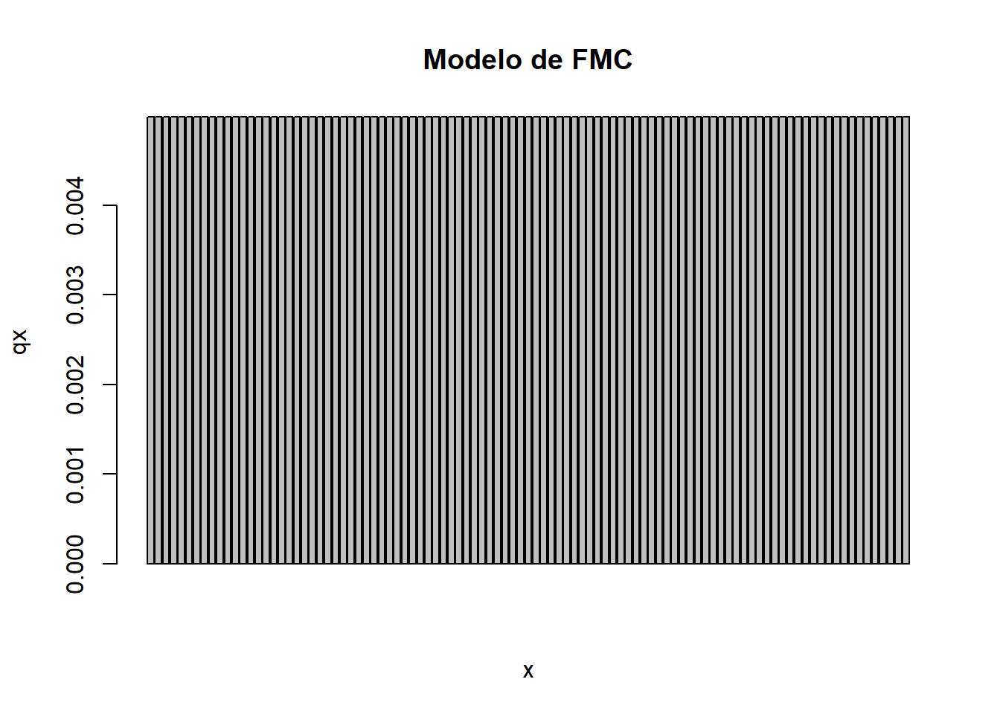
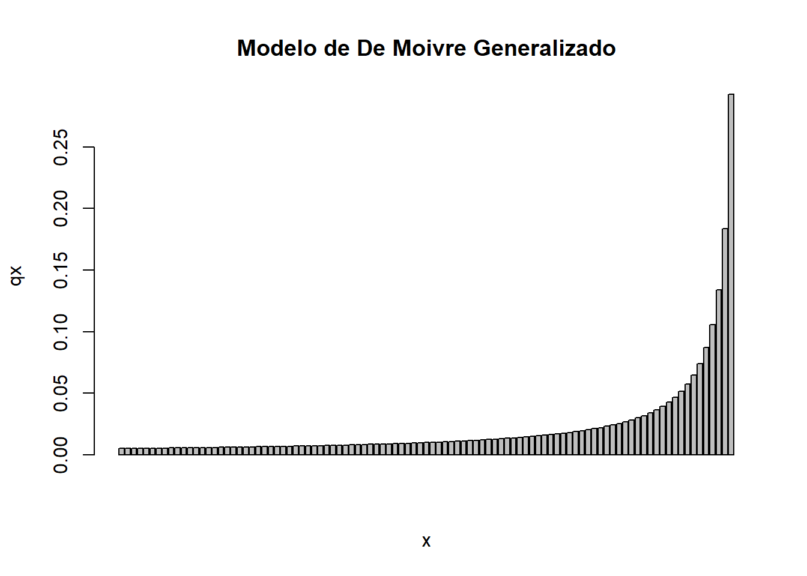

w <- 101
x <- 1:(w - 1)
l1 <- 1000000Modelos de Mortalidad
1 Definiciones
1.1 Mortalidad y supervivencia
Supongamos que (\(x\)) denota la edad de una persona. Vamos a modelar su tiempo futuro de vida mediante una variable aleatoria \(T_x = T(x)\), que representa el tiempo futuro de vida para una persona de edad (\(x\)). \(\omega\) es la edad terminal o edad máxima que vivirá la persona y la edad de muerte será \(x + T_x\).
La función de distribución \(F_{T_x}(t)\) representa la probabilidad de que la persona de edad (\(x\)) muera en los próximos \(t\) años:
\[F_{T_x}(t) = F_x(t) = P(T_x \leq t).\]
La función de sobrevivencia \(S_{T_x}(t)\) representa la probabilidad de que la persona de edad (\(x\)) viva al menos \(t\) años:
\[S_{T_x}(t) = S_x(t) = P(T_x > t)\]
Claramente \(F_x(t) = 1 - S_x(t)\). En notación actuarial tenemos:
\({}_tp_x\): Probabilidad de que una persona de edad (\(x\)) sobreviva al menos \(t\) años:
\[{}_tp_x = P(T_x > t) = S_x(t) = \frac{S_0(x+t)}{S_0(x)}\] \({}_tq_x\): Probabilidad de que una persona de edad (\(x\)) muera en los próximos \(t\) años:
\[{}_tq_x = P(T_x \leq t) = F_x(t) = \frac{F_0(x + t) - F_0(x)}{1 - F_0(x)}.\]
Cuando \(t=1\), \({}_1q_x = q_x\) y \({}_1p_x = p_x\).
\({}_{t|u}q_x\): Probabilidad de que una persona de edad (\(x\)) muera entre edades (\(x+t\)) y (\(x+t+u\)):
\[{}_{t|u}q_x = P(t \leq T_x < t + u).\]
Se prueba que
\[_{t|u}q_x = {}_tp_x \cdot {}_uq_{x+t}\]
\[_{t|u}q_x = {}_tp_x - {}_{t+u}p_x\] \[_{t|u}q_x = {}_{t+u}q_x - {}_tq_x\]
1.2 Fuerza de mortalidad
LA fuerza de mortalidad para una persona de edad (\(x\)) se denota como \(\mu_x\) y se define como
\[\mu_x = \lim_{dx \rightarrow 0^{+}} \frac{1}{dx}P(T_x < dx)\]
Se prueba que
\[\mu_x = - \frac{S'_0(x)}{S_0(x)} = \frac{d}{dx}(-\ln(S_0(x))).\]
Además,
\[S_0(t) = \exp\left( -\int_0^t \mu_x\, dx \right)\]
\[S_x(t) = \exp\left( -\int_0^t \mu_{x + s}\, ds \right)\]
Finalmente:
\[\mu_{x+t} = - \frac{d}{dt}\ln({}_tp_x) = \frac{f_x(t)}{{}_tp_x}\]
1.3 Tablas de mortalidad
Para la construcción de una tabla de mortalidad, se quiere conocer el número de personas vivas en cada perioso y el número de defunciones.
- \(l_x\): Número de personas con vida a edad (\(x\)).
- \(d_x\): Número de personas muertas a edad (\(x\)).
- \(r\); radix poblacionad; número de personas vivas al inicio del estudio.
En general,
\[d_x = l_x - l_{x+1}\]
Para el cálculo de probabilidades:
\[p_x = \frac{l_{x+1}}{l_x}\]
\[q_x = \frac{d_x}{l_x}\]
Más aún
2 Ley de De Moivre (1729)
Definimos
\[\mu_x = \frac{1}{\omega - x}, \quad 0 < x < \omega\]
De aquí se sigue que
\[S_0(t) = \frac{\omega - x}{\omega}\]
tm1 <- data.frame(x)
tm1#px
tm1$px = 1 - (1 / (w - tm1$x))
tm1$px[w - 1] = 0
#qx
tm1$qx = 1 - tm1$px
#lx
tm1$lx = l1
for (k in 1:(w - 2)) {
tm1$lx[k + 1] = tm1$lx[k] * tm1$px[k]
}
#dx
tm1$dx = tm1$lx * tm1$qx
#ex
##Recordemos que ex = ex:n + npx*e{x+n}
##Si n=1, ex = px*(1+e{x+1})
tm1$ex = 0
for (k in 1:(w - 2)) {
tm1$ex[w - 1 - k] = tm1$px[w - 1 - k] * (1 + tm1$ex[w - k])
}
#barplot
barplot(tm1$qx[1:(w - 2)],
xlab = 'x',
ylab = 'qx',
main = 'Ley de De Moivre')
3 Ley de Gompertz
#=============================================================================#
B = 0.000185
C = 1.068573
tm2 = data.frame(x)
#px
tm2$px = exp(B*(C^tm2$x)*(1-C)/log(C))
tm2$px[w-1] = 0
#qx
tm2$qx = 1 - tm2$px
#lx
tm2$lx = l1
for(k in 1:(w-2)){
tm2$lx[k+1] = tm2$lx[k] * tm2$px[k]
}
#dx
tm2$dx = tm2$lx * tm2$qx
#ex
tm2$ex = 0
for(k in 1:(w-2)){
tm2$ex[w-1-k] = tm2$px[w-1-k] * (1 + tm2$ex[w-k])
}
#barplot
barplot(tm2$qx[1:(w-2)], xlab='x', ylab='qx', main='Ley de Gompertz')
4 Ley de Makeham
#=============================================================================#
A = -0.0001
B = 0.00021
C = 1.0901
tm3 = data.frame(x)
#px
tm3$px = exp((B*(C^tm3$x)*(1-C))/log(C)-A)
tm3$px[w-1] = 0
#qx
tm3$qx = 1 - tm3$px
#lx
tm3$lx = l1
for(k in 1:(w-2)){
tm3$lx[k+1] = tm3$lx[k] * tm3$px[k]
}
#dx
tm3$dx = tm3$lx * tm3$qx
#ex
tm3$ex = 0
for(k in 1:(w-2)){
tm3$ex[w-1-k] = tm3$px[w-1-k] * (1 + tm3$ex[w-k])
}
#barplot
barplot(tm3$qx[1:(w-2)], xlab='x', ylab='qx', main='Ley de Makeham')
5 Modelo de Weibull
#=============================================================================#
k <- 0.000005
n <- 2
tm4 = data.frame(x)
#px
tm4$px = exp(k*(tm4$x^(n+1)-(tm4$x+1)^(n+1))/(n+1))
tm4$px[w-1] = 0
#qx
tm4$qx = 1 - tm4$px
#lx
tm4$lx = l1
for(k in 1:(w-2)){
tm4$lx[k+1] = tm4$lx[k] * tm4$px[k]
}
#dx
tm4$dx = tm4$lx * tm4$qx
#ex
tm4$ex = 0
for(k in 1:(w-2)){
tm4$ex[w-1-k] = tm4$px[w-1-k] * (1 + tm4$ex[w-k])
}
#barplot
barplot(tm4$qx[1:(w-2)], xlab='x', ylab='qx', main='Modelo de Weibull')
6 Modelo de Pareto
#=============================================================================#
a = 0.03
b = 0.2
tm5 = data.frame(x)
#px
tm5$px = ((b+tm5$x)/(b+tm5$x+1))^a
tm5$px[w-1] = 0
#qx
tm5$qx = 1 - tm5$px
#lx
tm5$lx = l1
for(k in 1:(w-2)){
tm5$lx[k+1] = tm5$lx[k] * tm5$px[k]
}
#dx
tm5$dx = tm5$lx * tm5$qx
#ex
tm5$ex = 0
for(k in 1:(w-2)){
tm5$ex[w-1-k] = tm5$px[w-1-k] * (1 + tm5$ex[w-k])
}
#barplot
barplot(tm5$qx[1:(w-2)], xlab='x', ylab='qx', main='Modelo de Pareto')
7 Modelo de Fuerza de Mortalidad Constante
#=============================================================================#
mu <- 0.005
tm6 = data.frame(x)
#px
tm6$px = exp(-mu)
tm6$px[w-1] = 0
#qx
tm6$qx = 1 - tm6$px
#lx
tm6$lx = l1
for(k in 1:(w-2)){
tm6$lx[k+1] = tm6$lx[k] * tm6$px[k]
}
#dx
tm6$dx = tm6$lx * tm6$qx
#ex
tm6$ex = 0
for(k in 1:(w-2)){
tm6$ex[w-1-k] = tm6$px[w-1-k] * (1 + tm6$ex[w-k])
}
#barplot
barplot(tm6$qx[1:(w-2)], xlab='x', ylab='qx', main='Modelo de FMC')
8 Modelo de De Moivre Generalizado
#=============================================================================#
alpha <- 0.5
tm7 <- data.frame(x)
#px
tm7$px = ((w-tm7$x-1)/(w-tm7$x))^(alpha)
tm7$px[w-1] = 0
#qx
tm7$qx = 1- tm7$px
#lx
tm7$lx = l1
for(k in 1:(w-2)){
tm7$lx[k+1] = tm7$lx[k] * tm7$px[k]
}
#dx
tm7$dx = tm7$lx * tm7$qx
#ex
tm7$ex = 0
for(k in 1:(w-2)){
tm7$ex[w-1-k] = tm7$px[w-1-k] * (1 + tm7$ex[w-k])
}
#barplot
barplot(tm7$qx[1:(w-2)], xlab='x', ylab='qx', main='Modelo de De Moivre Generalizado')
9 Modelo Experiencia Mexicana 2000 de la CNSF
#=============================================================================#
tm8 = read.csv('https://drive.google.com/uc?id=1bwd_0PdLScpOrS6b7_ghzPYtjdZTe0GR&export=download&authuser=0')
#px
tm8$px = 1 - tm8$qx
#lx
tm8$lx = l1
for(k in 1:88){
tm8$lx[k+1] = tm8$lx[k] * tm8$px[k]
}
#dx
tm8$dx = tm8$lx * tm8$qx
#ex
tm8$ex = 0
for(k in 1:88){
tm8$ex[89-k] = tm8$px[89-k] * (1 + tm8$ex[90-k])
}
#barplot
barplot(tm8$qx[c(1:88)], xlab='x', ylab='qx', main='Modelo Experiencia Mexicana 2000 de la CNSF')10 Escribir en CSV
#=============================================================================#
#csv
"write.table(tm1,
file = 'C:/Users/Erick/Documents/Actuaría/Semestre 6/Matemáticas Actuariales del Seguro de Personas 1/Proyecto 1/01 De Moivre.csv',
sep = ',', row.names = FALSE, col.names = TRUE)
write.table(tm2,
file = 'C:/Users/Erick/Documents/Actuaría/Semestre 6/Matemáticas Actuariales del Seguro de Personas 1/Proyecto 1/02 Gompertz.csv',
sep = ',', row.names = FALSE, col.names = TRUE)
write.table(tm3,
file = 'C:/Users/Erick/Documents/Actuaría/Semestre 6/Matemáticas Actuariales del Seguro de Personas 1/Proyecto 1/03 Makeham.csv',
sep = ',', row.names = FALSE, col.names = TRUE)
write.table(tm4,
file = 'C:/Users/Erick/Documents/Actuaría/Semestre 6/Matemáticas Actuariales del Seguro de Personas 1/Proyecto 1/04 Weibull.csv',
sep = ',', row.names = FALSE, col.names = TRUE)
write.table(tm5,
file = 'C:/Users/Erick/Documents/Actuaría/Semestre 6/Matemáticas Actuariales del Seguro de Personas 1/Proyecto 1/05 Pareto.csv',
sep = ',', row.names = FALSE, col.names = TRUE)
write.table(tm6,
file = 'C:/Users/Erick/Documents/Actuaría/Semestre 6/Matemáticas Actuariales del Seguro de Personas 1/Proyecto 1/06 FMC.csv',
sep = ',', row.names = FALSE, col.names = TRUE)
write.table(tm7,
file = 'C:/Users/Erick/Documents/Actuaría/Semestre 6/Matemáticas Actuariales del Seguro de Personas 1/Proyecto 1/07 De Moivre Generalizado.csv',
sep = ',', row.names = FALSE, col.names = TRUE)
write.table(tm8,
file = 'C:/Users/Erick/Documents/Actuaría/Semestre 6/Matemáticas Actuariales del Seguro de Personas 1/Proyecto 1/08 CNSF 2000.csv',
sep = ',', row.names = FALSE, col.names = TRUE)"[1] "write.table(tm1, \n file = 'C:/Users/Erick/Documents/Actuaría/Semestre 6/Matemáticas Actuariales del Seguro de Personas 1/Proyecto 1/01 De Moivre.csv', \n sep = ',', row.names = FALSE, col.names = TRUE)\n\nwrite.table(tm2, \n file = 'C:/Users/Erick/Documents/Actuaría/Semestre 6/Matemáticas Actuariales del Seguro de Personas 1/Proyecto 1/02 Gompertz.csv', \n sep = ',', row.names = FALSE, col.names = TRUE)\n\nwrite.table(tm3, \n file = 'C:/Users/Erick/Documents/Actuaría/Semestre 6/Matemáticas Actuariales del Seguro de Personas 1/Proyecto 1/03 Makeham.csv', \n sep = ',', row.names = FALSE, col.names = TRUE)\n\nwrite.table(tm4, \n file = 'C:/Users/Erick/Documents/Actuaría/Semestre 6/Matemáticas Actuariales del Seguro de Personas 1/Proyecto 1/04 Weibull.csv', \n sep = ',', row.names = FALSE, col.names = TRUE)\n\nwrite.table(tm5, \n file = 'C:/Users/Erick/Documents/Actuaría/Semestre 6/Matemáticas Actuariales del Seguro de Personas 1/Proyecto 1/05 Pareto.csv', \n sep = ',', row.names = FALSE, col.names = TRUE)\n\nwrite.table(tm6, \n file = 'C:/Users/Erick/Documents/Actuaría/Semestre 6/Matemáticas Actuariales del Seguro de Personas 1/Proyecto 1/06 FMC.csv', \n sep = ',', row.names = FALSE, col.names = TRUE)\n\nwrite.table(tm7, \n file = 'C:/Users/Erick/Documents/Actuaría/Semestre 6/Matemáticas Actuariales del Seguro de Personas 1/Proyecto 1/07 De Moivre Generalizado.csv', \n sep = ',', row.names = FALSE, col.names = TRUE)\n\nwrite.table(tm8, \n file = 'C:/Users/Erick/Documents/Actuaría/Semestre 6/Matemáticas Actuariales del Seguro de Personas 1/Proyecto 1/08 CNSF 2000.csv', \n sep = ',', row.names = FALSE, col.names = TRUE)"